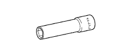

ENGINE SWITCH > INSPECTION > Preparation

| Dial indicator | - |
| Pull scale | - |
| Sandpaper | - |
| Service wire harness | - |
| Snap ring pliers | - |
| Torque wrench | - |
| Vernier caliper | - |
| V-block | - |
 | 09012-1C110 | Deep Socket Wrench 10mm | - |
 | 09082-00040 | TOYOTA Electrical Tester | - |
 | (09083-00150) | Test Lead Set | - |
| Toyota Genuine Seal Packing 1121C, Three Bond 1121C or equivalent | - |